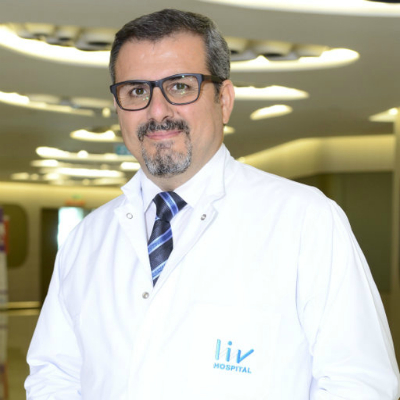
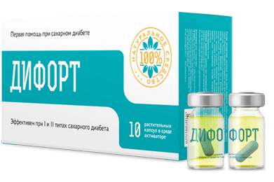

Redaksiyadan: "Bu gün biz Endokrinologiya İnstitutunun aparıcı mütəxəssisi, tibb elmləri doktoru və fəaliyyət göstərən həkim, minlərlə xəstələrinin həyatını xilas edən Erdal Karaöz ilə intervünü dərc edirik. Söhbətin mövzusu – diabetə görə kütləvi fəsadlar diabetiklərin sürətlə artan ölüm faizi ilə və Endokrinologiya ETİ-nin on minlərlə həyatı qurtarmağa imkan verə biləcək yeni işləməsi."

Söhbəti aparır Türkan Muradova
Türkan Muradova: "Xoş gördük, Erdal Karaöz. Sİzə birinci sualım – diabet nə ilə təhlükəlidir?"
Erdal Karaöz: Xoş gördük, Türkan. Diabet - ən təhlükəli xəstəliklərdən biridir. Təəssüflər olsun ki, ciddi müalicə aparılmasa, o tədricən insanı öldürür. Həmçinin, əlbəttə ki, diabetdə fəsadlar olur. Onları 3 qrupa bölək.
Birincisi, diabetin klassik fəsadı – diabetik koma, ətrafların nekrozu, qanqrena, korluq, impotensiya, ketoasidoz, hipoqlikemiyadır. Bir qayda olaraq onların diabetin inkişafı prosesində yaranır. Bəzi hallarda xəstəni xilas etmək mümkündür. Ətrafların nekrozuna gəlincə isə, bir çox hallarda o əlilliklə qurtarır.
İkincisi, orqanlar sürətlə dağılır qanda şəkər yüksək səviyyədə olmasına görə (5.1 mmol/litrdən yüksək). Ürəyin, qaraciyərin, böyrəklərin və bütün digər daxili orqanların xidmət müddəti bir neçə dəfə azalır. Bu orqanlar ağrımağa başlayır. Bundan əlavə, istənilən anda bu orqanlardan biri şəkər kəskin artıqda sadəcə işləməkdən imtina edir.
Üçüncüsü, bu yaxınlarda məlum olduğu kimi, diabet xərçəngə səbəb olur. Şəkərin davamlı sıçrayışı şişlərin yaranmasına gətirib çıxaran sərbəst radikalların yaranmasına köməklik göstərir. Hər üçüncü diabetik tez ya gec onkoxəstəyə çevrilir.
Türkan Muradova: "Yəni diabet mahiyyəti etibarilə ölümcül xəstəlikdir?"
Erdal Karaöz: Mütəxəssislər diabeti dünyada ən təhlükəli xəstəliklərdən biri hesab edirlər. Hər il diabetin səbəb olduğu fəsadlara görə bir neçə milyon ölüm qeyd edilir. Odur ki, bəli – diabet ölümcül xəstəlikdir.
Söhbətin nədən getdiyini özünüzə daha dəqiq təsəvvür etməyiniz üçün profil xəstəxanalardan bir neçə fotoşəkil göstərim:
+Şəkili göstər
Ürək-damar xəstəlikləri (ateroskleroz, miokard infarktı);
+Şəkili göstər
Aşağı ətrafların zədələnməsi;
+Şəkili göstər
Görmənin azalması, korluq;
+Şəkili göstər
Periferik sinirlərin, damarların, dərinin, yumşaq toxumaların zədələnməsi fonunda pəncənin xəstəlikləri (xoralar, irinli-nekrotik proseslər).
Türkan Muradova: "İnsanda diabetin olmasını hansı simptomlardan anlamaq olar?"
Erdal Karaöz: Əvvəlcə gəlin xəstəliyin səbəbləri barədə qısa danışaq. Şəkərli diabetin əsas səbəbi – immun sistemin işində nasazlıqdır. Sağlam mədəaltı vəzi insulin hasil edir, o da qandakı şəkəri emal edir. Diabet zamanı mədəaltı vəzin işi pozulur. İnsulin yoxdur, buna görə də şəkər qanda toplanır, orqanlar isə qlükozanı tam almır. Orqanların: beynin, ürəyin, qaraciyərin, ağciyərin, mədənin, bağırsağın, əzələlərin, dərinin strukturu dəyişir. Bu son dərəcə kədərli nəticələrə gətirib çıxarır.
Diabetin simptomları barədə danışırıqsa, o zaman onlar:
- Susuzluq;
- Xroniki yorğunluq;
- Ağızda quruluq;
- Zəiflik və yüksək yorulma;
- Dəri xəstəlikləri;
- Baş ağrıları;
- Yüksək iştah;
- Qaşınma;
- Yuxu;
- Pis sağalan yaralar;
- Piylənmə.
Xəstəliyin səbəbləri kimi çıxış edirlər:
- Artıq çəki;
- Hüceyrələrin insulinə həssaslığının pozulması;
- Fiziki qeyri-aktivlik;
- İrsiyyət;
- Arterial hipertoniya;
- Tütünçəkmə və alkoqol;
- 40-dan yuxarı yaş;
- Ekologiya;
- Stresslər.
Türkan Muradova: "Diabet zamanı öz həyatına görə necə mübarizə aparmaq olar?"
Erdal Karaöz: Çox vaxt diabet xəstələrinə dərman terapiyasını təklif edirlər. Bəzi hallarda insulini başqa dərmanlarla uyğunlaşdırırlar. Lakin bir problem var – bir çox vasitələr qanda şəkəri uzun müddətə stabilləşdirmirlər. Onların etdiyi nə varsa – onun səviyyəsini situativ olaraq azaltmaqdır. Şəkər səviyyəsinin ciddi dəyişmələri qalırlar və orqanizmə olduqca pis təsir edirlər. Bundan başqa, ağırlaşma təhlükəsi də yox olmur. Kobud desək, bu dərmanlar insana özünü babat hiss etmək imkanını verirlər və ona durduğu yerdə ölməyə qoymurlar.
Məhz buna görə də bütün profil mütəxəssisləri çoxdandır ki, qanda şəkəri daimi əsaslarla stabilləşdirə və insanı sağlam vəziyyətə qaytara biləcək effektiv preparatın axtarışı ilə məşğul idilər. Qürurla deyə bilərəm ki, məhz Rusiya mütəxəssisləri – diabet fəsadlarının müalicəsi üçün vasitəni işləyən alim və həkimlər bütün dünya təbiblərinin bu yarışında birinci oldular.
Türkan Muradova: "Preparat barədə nə deyə bilərsiniz?"
Erdal Karaöz: : Əlbəttə. Bu "Difort" – diabetlə mübarizə vasitəsi olaraq, mədəaltı vəzin iş qabiliyyətini bərpa edir və orqanizmə özü insulini hasil edib mənimsəməyinə imkan verir. Yəni, yeni preparat diabetin səbəbinin özü ilə mübarizə aparır. Difort nəinki qanda şəkərin səviyyəsini stabilləşdirir, o həm də elə başlıca təhlükə olan diabetin bütün ən təhlükəli fəsadlarının qarşısını almağa kömək edir. Diabet xəstəsi nəhayətdə sağlam insana çevrilir.
Difort – içməli ampulalardır. Onların içində adi kapsulalar aktiv mühitə yerləşdirilib. İnsan belə ampluanın içindəki içəndə, orqanizmdə aktiv reaksiya baş verir və 20 dəqiqə ərzində preparat qanla birlikdə bütün orqanlara çatdırılır. 30 gün ərzində onların işi bərpa olunur, metabolizm düzəlir.
Preparatın işlənməsi bir neçə il aparıldı, təxminən 930 milyon dollar və diabetin müalicəsi sahəsində ən yaxşı mütəxəssislərin 864 000 işçi insan-saatı ona xərcləndi.
Difortun istər xaricdə, istərsə də ölkə daxilində analoqu yoxdur. Rusiyadan başqa Difort Avropa İttifaqında da kliniki sınaqlardan keçmişdir.
Türkan Muradova: "İnsanlar Difort üçün necə müraciət edə bilərlər?"
Erdal Karaöz: Çox sadə. Yeganə ediləcək olan şey - aşağıda yerləşən sifariş formasının doldurulmasıdır. Bundan sonra sizə geri zəng edəcəklər, bütün suallarınıza cavab verəcəklər, rahat çatdırılma vaxtını və ünvanı dəqiqləşdirəcəklər. Çatdırılmanın özü poçt ilə və ya kuryer xidmətləri vasitəsilə həyata keçirilir. Hər şey maksimal dərəcədə şəffaf və sadə düzəldilib ki, mütləq olaraq hər birimiz heç bir problem olmadan preparatı ala bilsin.
Türkan Muradova: "Bəlkə biz intervünü sonlandırmazdan əvvəl oxucularımıza nə isə demək istərdiniz?"
Erdal Karaöz: Diabet olan bütün insanlara üz tutub yeganə onu demək istəyirəm ki, - xəstəliyinizə təəssüf doğuran anlaşılmazlıq kimi yanaşmayın. Bu olduqca təhlükəli xəstəlikdir. Odur ki, əgər sizdə simptomlar varsa və ya sizə diaqnoz qoyulubsa - müalicə olunun, xəstəliyin təhlükəli və dönməz nəticələrədək inkişaf etməsinə imkan verməyin.
